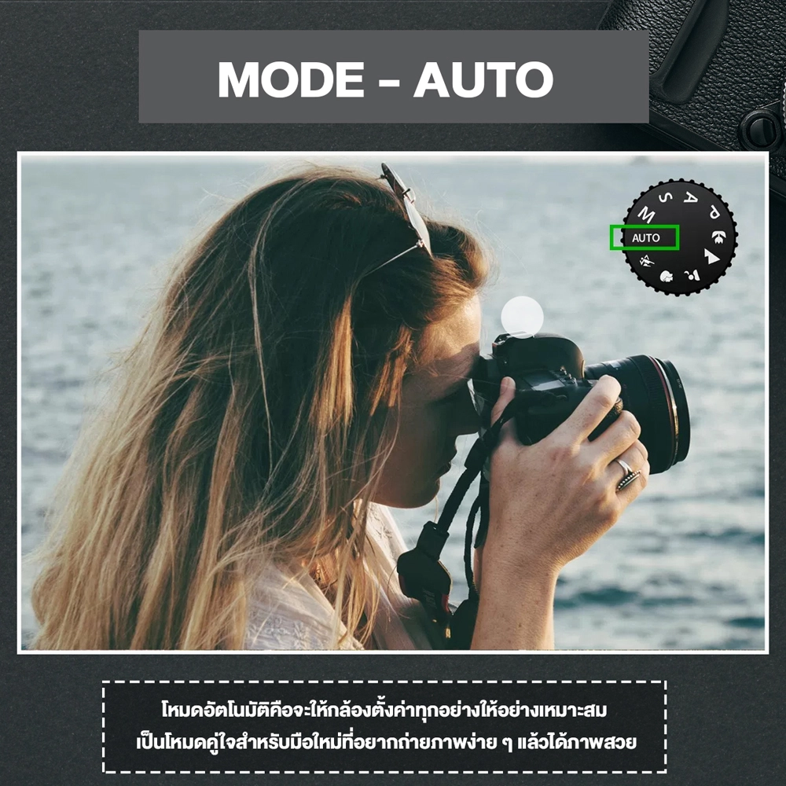

Mode Auto – โหมดถ่ายภาพอัตโนมัติ

Auto Modes โหมดอัตโนมัติ ,โหมด Auto (เหมาะสำหรับมือใหม่ที่สุด) โหมดนี้แทบจะไม่ต้องอธิบายก็เข้าใจกันได้ โหมด Auto เป็นโหมดกล้องที่จะทำให้ทุกคนในโลกใบนี้สามารถถ่ายภาพได้เลย เพราะการคำนวณทุกอย่างกล้องคิดให้ ซึ่งหลายคนมักจะคิดว่าโหมดนี้ถ่ายภาพได้ออกมางั้น ๆ แต่แท้จริงแล้วปัจจุบันเทคโนโลยีถูกพัฒนามาไกลมาก และเก็บปัญหารายละเอียดมาพัฒนาเพื่อให้ Auto Mode นั้นมีประสิทธิภาพที่สุด ดังนั้นโหมด Auto ไม่ได้ด้อยอย่างที่เราคิด
Mode Auto – โหมดถ่ายภาพอัตโนมัติ
สถานะการณ์ที่เหมาะสมจะใช้โหมด Auto
เรียกว่าได้หมด เพียงแต่ว่าเราจะได้ภาพแบบมาตรฐานของตัวกล้องที่คิดให้
เหมาะสำหรับมือใหม่ที่ยังตั้งค่าโหมดอื่นไม่เก่ง
หรือยังไม่รู้จักวิธีคิดของกล้องในโหมดอื่นเลย
โหมดนี้จะทำให้คนเล่นระดับเริ่มต้นจริง ๆ อุ่นใจว่ายังมีโหมดที่ช่วยให้เขาถ่ายภาพได้ดี
แม้จะยังไม่ดีที่สุดก็ตาม

Mode Auto – โหมดถ่ายภาพอัตโนมัติ

การใช้โหมด Auto เป็นวิธีที่ดีที่จะได้เรียนรู้เกี่ยวกับเรื่อง exposure triangle หรือปัจจัยสามสิ่งที่มีผลต่อการวัดแสง คือ ค่าสปีดชัตเตอร์, ISO และค่ารูรับแสง เมื่อใช้โหมดนี้เราควรสังเกตดูการตั้งค่าของกล้องว่ากล้องคำนวณการตั้งค่าในแต่ละสภาพแสงยังไง เพื่อที่จะนำมาปรับใช้ในการตั้งค่าโหมด Manual ในภายหลัง